Trainieren.
Festhalten.
Besser werden.
ImberGym ist dein Trainingsbuch für Studio, Zuhause und draußen: Pläne, animierte Übungen, Rekorde und Statistik – dazu GPS-Touren mit Trackshow, Ernährung und Supplements. Ohne Konto, ohne Cloud: Deine Daten bleiben auf deinem Handy.
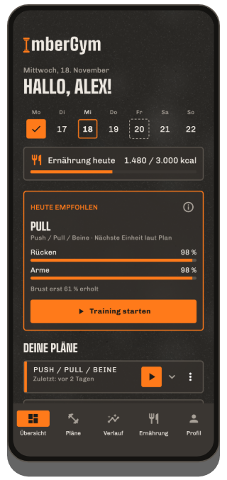
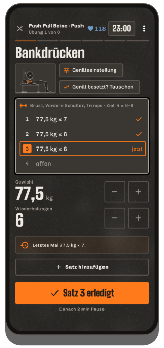
Alles fürs Training.
An einem Ort.
Vom ersten Satz bis zur Bergtour – ImberGym schreibt mit, rechnet aus und zeigt dir, wie du besser wirst.
Eine Übung.
Ein Fokus.
Werte vom letzten Mal vorausgefüllt, Steigerungsvorschlag, Pausentimer auch am Sperrbildschirm.
Die Kamera
zählt mit
Liegestütz, Kniebeugen, Plank – auf dem Gerät erkannt, kein Bild verlässt das Handy.
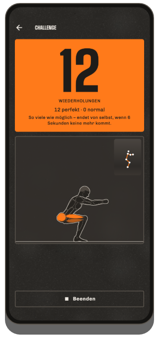
Rekorde direkt nach dem Satz
Intervalle mit Ansage – auch auf der Uhr
Trackshow
Deine GPS-Tour als Kamerafahrt über Höhenlinien – mit Highlights zum Teilen.
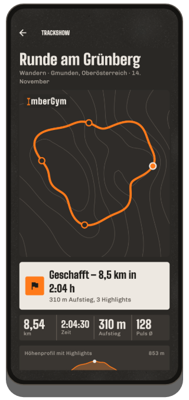
Body-Map &
Erholung
Sieh, welche Muskeln du trainiert hast – und welche wieder bereit sind.
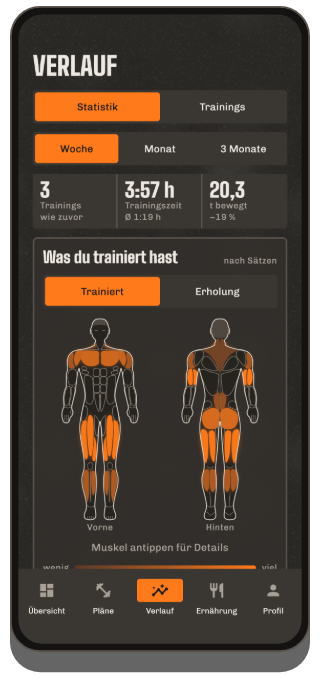
Was ImberGym kann
Alles, was du fürs Training brauchst – ohne Konto, ohne Cloud.
Training
Fortschritt
Körper & Ernährung
Und mehr
So sieht ImberGym aus
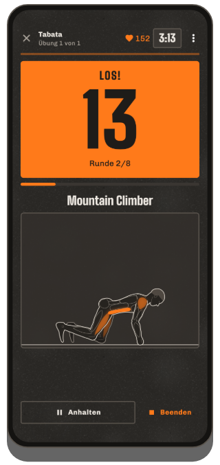
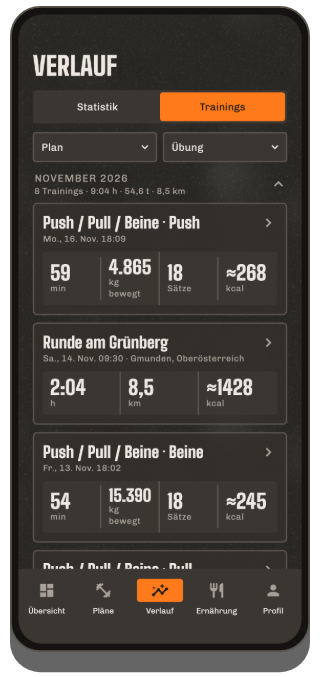
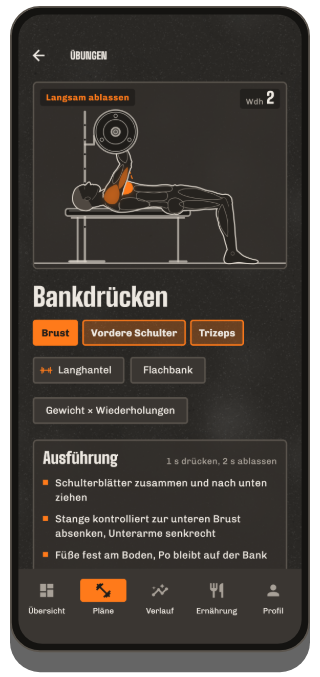
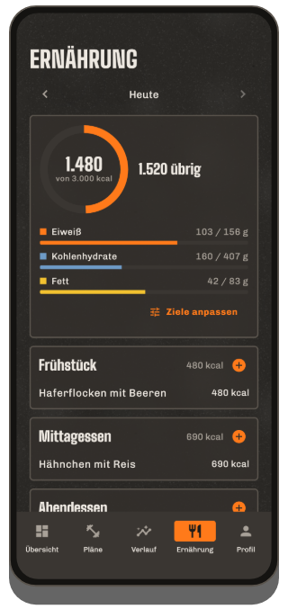
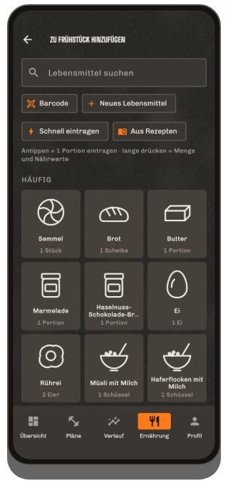
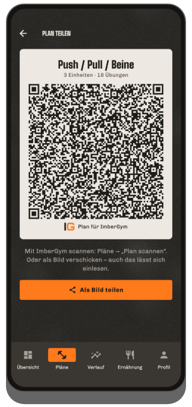
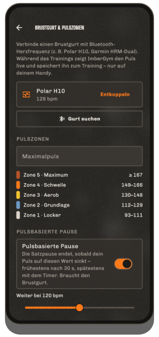
Draußen unterwegs
Deine Daten.
Dein Handy.
Installieren und loslegen – ohne Anmeldung.
Alles lokal gespeichert, Sicherung als Datei.
Keine Tracker, keine Analyse-Tools.
Gratis & Premium
Gratis
- Komplettes Training mit Pausentimer
- Bis zu 5 eigene Pläne und 5 eigene Übungen, alle Vorlagen
- Übungsdatenbank mit Animationen
- Verlauf, Rekorde, Statistik, Wochen- & Jahresrückblick
- Puls von der Uhr über Health Connect, Brustgurt live mit Pulszonen und pulsbasierter Pause
- Supplements mit Erinnerungen, Challenge mit Kamera-Zähler
- Kalorientracker mit Lebensmittel-Katalog und Barcode, Gewicht
- Pläne per QR-Code weitergeben, Trainings als Karte teilen
Premium
- Unbegrenzte Pläne und eigene Übungen, Pläne per QR-Code übernehmen
- Body-Map, Erholung, Körperfett- & Gewichtsverlauf
- Intervall-Training (Tabata & Co.)
- Outdoor mit GPS, Trackshow als Video
- Uhren-App (Wear OS)
- Studios, Mitgliedskarten, Fortschrittsfotos
- Alle Rezepte, dynamisches Kalorienziel
Monatlich, jährlich oder einmalig als Lifetime über Google Play – den aktuellen Preis siehst du in der App. Nach deinem ersten Training 7 Tage kostenlos testen.
Jetzt bei Google PlayHäufige Fragen
Brauche ich ein Konto?
Nein. ImberGym funktioniert ohne Anmeldung und ohne eigenen Server.
Wo liegen meine Daten?
Ausschließlich auf deinem Handy. Es gibt keine Cloud, keine Werbung und keine Analyse-Tools. Details in der Datenschutzerklärung.
Funktioniert die App ohne Internet?
Ja. Nur zwei Dinge nutzen das Internet: das Nachschlagen eines unbekannten Barcodes bei Open Food Facts und der Ortsname einer GPS-Tour (der Startpunkt geht dafür an den Ortsdienst von Android). Alles andere läuft offline.
Wie kommt der Puls meiner Uhr in ImberGym?
Über Health Connect, den Gesundheitsspeicher von Android. In der App deiner Uhr Health Connect einschalten und „Herzfrequenz“ freigeben – das können u. a. Samsung Health, Garmin Connect, Fitbit, Polar Flow, Withings und Zepp (Amazfit). Danach in ImberGym in den Trainingsdetails „Puls von der Uhr laden“ tippen. Huawei: Huawei Health schreibt nicht nach Health Connect; mit der App „Health Sync“ (Play Store) lassen sich die Daten übertragen – Quelle Huawei Health, Ziel Health Connect, „Herzfrequenz“ auswählen. Tipp: auf der Uhr ebenfalls ein Training starten, dann misst sie laufend.
Welche Brustgurte funktionieren?
Jeder Bluetooth-Brustgurt mit dem Standard-Herzfrequenzprofil, z. B. Polar H9/H10, Garmin HRM-Dual oder Wahoo TICKR. Im Profil unter „Brustgurt & Pulszonen“ einmal koppeln – danach verbindet er sich bei jedem Training von selbst.
Wie teile ich einen Plan?
Im Plan-Editor auf das QR-Symbol tippen und den Code zeigen oder als Bild schicken. Der andere scannt ihn im Tab „Pläne“ mit „Plan scannen“ – auch aus einem Bild. Der ganze Plan steckt im Code, es wird nichts hochgeladen.
Ich wechsle das Handy – was passiert mit meinen Daten?
Im Profil unter „Daten & Sicherung“ eine Sicherung erstellen und z. B. in Google Drive speichern. Auf dem neuen Handy gleich auf der ersten Seite „Neues Handy? Sicherung wiederherstellen“ wählen.
Ich komme von Strong oder Hevy – kann ich meine Trainings mitnehmen?
Ja. Den CSV-Export der alten App unter „Daten & Sicherung“ → „Trainings importieren“ einlesen. ImberGym ordnet die Übungen zu und zeigt vorher eine Vorschau.
Werden meine Fortschrittsfotos hochgeladen?
Nein. Sie liegen in einem privaten App-Ordner, erscheinen nicht in der Galerie und sind sogar vom Android-Backup ausgenommen.
Kann ich die Ernährung ausblenden?
Ja. Im Profil lässt sich der ganze Bereich abschalten – dann ist ImberGym ein reines Trainingsbuch.
Wie lösche ich meine Daten?
Einzelne Einträge direkt in der App, alles auf einmal durch Deinstallieren der App.